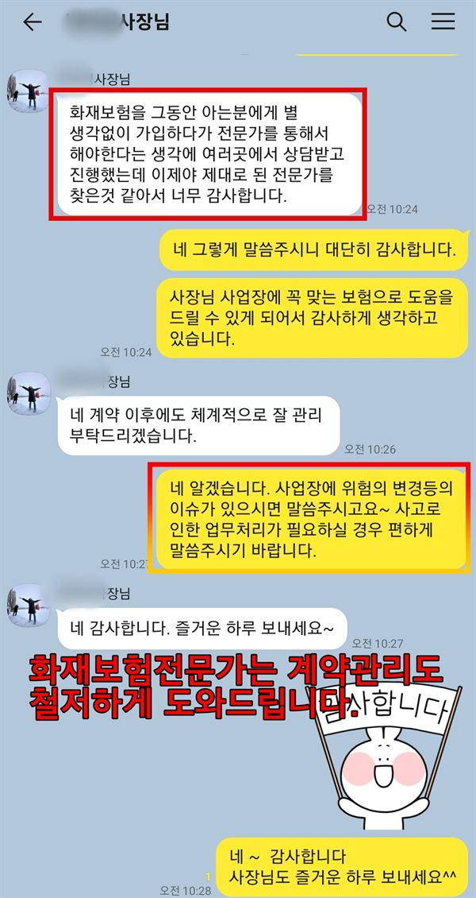

동작구병원화재보험은 흑석동·신대방동 대형병원 주변 의원이 진료실, 장비, 환자·이웃 배상책임을 준비하는 보험입니다. 물리치료 기기 대수와 언덕길 건물의 출입구·소방차 접근이 설계의 출발점입니다. 수술 뒤 경과를 보러 오는 환자의 대피도 함께 봅니다.
동작구병원화재보험 보장 항목
- 화재·재산: 물리치료 온열·전기 치료 기기, 치과 컴프레서·석션 기기, 진료실 인테리어
- 배상책임: 흑석동·신대방동 대형병원 수술 뒤 경과를 보러 온 거동 불편 환자의 대피 중 사고
- 화재배상책임: 대형병원 정문 앞 상가에서 벽 하나를 둔 약국·의원으로 번진 불
- 휴업 손해: 인근 큰 건물 화재의 연기나 통제로 진료를 못 한 기간(가입 담보에 따라)
동작구병원화재보험 보험료 산정 기준과 가입 시 고려사항
- 장비 가액: 물리치료 기기 대수와 동시 사용 시간, 재조달가액 기준 합산 금액
- 건물 지형: 한강에서 관악산 쪽 언덕 건물의 층별 출입구 위치와 뒤편 옹벽 등 출구 구조
- 소방 접근: 건물 앞 도로 폭과 주차 차량, 경사 골목의 소방차 진입 가능 여부
- 연계 병원: 흑석동·신대방동 중 주로 오가는 대형병원 생활권과 그 환자층
동작구 의원은 큰 병원 진료 전후로 환자가 오가는 곳이 많습니다. 노영규 대표는 의원이 어느 대형병원 생활권에 있는지, 건물이 언덕 지형인지부터 봅니다.
동작구 안내
동작구, 왜 병원화재보험이 중요할까요?
동작구병원화재보험은 흑석동과 신대방동 대형병원 주변, 그리고 노량진·사당·상도동의 의원이 진료실과 장비, 환자와 이웃에 대한 배상책임을 화재에 대비해 마련하는 보험을 뜻합니다. 동작구에는 흑석동에 상급종합병원이, 신대방동에 시립 공공병원이 있어 한 구에 1천5백 병상 넘는 대형병원 두 곳이 자리합니다.
두 대형병원은 구의 북동쪽 한강변과 남서쪽 끝에 떨어져 있습니다. 그래서 동작구 동네 의원은 어느 병원 생활권에 속하느냐에 따라 연계되는 환자층이 다르고, 노량진이나 사당 쪽 주민은 가까운 이웃 구의 대학병원을 찾기도 합니다. 결국 동작구 의원은 한곳의 큰 병원만 바라보기보다 여러 대형병원 사이에서 동네 주치의 역할을 하는 경우가 많습니다.
큰 병원 주변 의원은 검사 결과를 들고 오거나 수술 뒤 경과를 보러 오는 환자가 많습니다. 재활과 물리치료처럼 장비와 공간을 많이 쓰는 진료가 늘어나는 이유이기도 하고, 치료 기구에서 나오는 열과 전기 사용량도 함께 커집니다.
동작구는 한강에서 관악산 쪽으로 오를수록 언덕이 많은 지형입니다. 경사진 길가 상가는 층마다 출입구 높이가 다르거나 뒤편이 막혀 있는 경우가 있어, 평소 비상구 동선과 소방차 접근을 따로 확인해 두어야 합니다. 특히 뒤편이 옹벽이나 다른 건물로 막힌 상가라면 출구가 한쪽뿐인지 먼저 살펴보세요.
주요 위험
동작구 의원은 어떤 화재 위험을 먼저 점검하나요?
수술 뒤 경과 관찰 환자
대형병원 수술 뒤 찾아오는 환자는 움직임이 불편해 대피가 느립니다. 이를 반영해 배상 한도를 봅니다.
물리치료 온열 기기
온열·전기 치료 기기를 동시에 여러 대 켜면 전기 부하가 커져 콘센트와 분전반 용량을 확인합니다.
언덕길 소방차 접근
경사진 골목 상가는 소방차가 가까이 붙기 어려워 초기 진화가 늦어질 수 있습니다.
층마다 다른 출입구
언덕에 선 건물은 1층과 지하층의 기준이 헷갈려 대피 안내가 틀어지기 쉬워 표지를 점검합니다.
대형병원 앞 약국 밀집
병원 정문 앞 상가는 약국과 의원이 벽 하나를 두고 붙어 있어 번짐 피해 책임을 나눠 둡니다.
치과 압축공기 설비
치과 컴프레서와 석션 기기는 과열되기 쉬운 곳에 놓이는 경우가 많아 설치 위치를 살핍니다.
※ 실제 보장 여부와 한도, 면책 사항은 가입하는 상품의 약관과 병원 현황에 따라 달라집니다.
방문 상담
동작구 직접 방문 상담
동작구는 대형병원 주변과 역세권, 언덕 주거지 의원이 서로 조건이 다릅니다. 흑석동부터 사당동까지 직접 찾아가 건물 구조와 장비를 확인합니다.
꼭 확인할 점검 항목
동작구 병원 보험 가입 전 무엇을 확인하나요?
- 연계하는 대형병원주로 어느 병원 환자가 오가는지 알면 환자층과 위험을 가늠하기 쉽습니다.
- 물리치료 기기 대수온열·전기 치료 기기 수와 동시에 켜는 시간을 알려 주세요.
- 건물 출입구와 층 구조언덕 건물이라면 출입구가 몇 층에 있는지 도면에 표시합니다.
- 소방차 진입로건물 앞 도로 폭과 주차 차량 상황을 사진으로 남겨 둡니다.
- 벽을 맞댄 점포같은 층 약국이나 점포와의 경계를 확인해 둡니다.
고객 후기
실제 계약고객 만족 사례




※ 실제 계약고객과 나눈 카카오톡 상담과 후기 일부이며, 개인정보는 가렸습니다.
지역 상담 Q&A
동작구병원화재보험 Q&A
대형병원 정문 앞 의원인데 병원에서 난 불도 영향이 있나요?
주변 큰 건물의 불이 직접 번지지 않더라도 연기나 통제로 진료를 못 할 수 있습니다. 휴업 손해를 어디까지 볼지 상담 때 함께 정합니다.
물리치료실이 넓은데 장비도 화재보험에 넣어야 하나요?
넣어 두는 것이 좋습니다. 치료 기기는 대수가 많아 합치면 금액이 커지므로 목록을 만들어 가입금액에 반영합니다.
언덕 골목 2층 의원이라 소방차가 늦게 올까 걱정입니다.
초기 진화가 늦어지면 피해가 커질 수 있어 소화기 위치와 직원 역할을 정해 두는 것이 우선입니다. 보험은 그만큼 재산 가액을 현실에 맞게 잡아 둡니다.
노량진 역세권에서 상도동 주택가로 옮기면 무엇이 달라지나요?
유동 인구 중심에서 주민 중심으로 환자층이 바뀌고 건물 구조도 달라집니다. 이전 주소를 기준으로 가입금액과 배상 범위를 다시 맞추길 권합니다.
동작구병원화재보험은 건물주 보험과 무엇이 다른가요?
건물주 보험은 보통 건물 자체만 대상으로 합니다. 임차한 의원의 인테리어, 물리치료 기기, 환자 배상책임은 의원 쪽에서 따로 준비해야 할 수 있습니다.
가까운 지역 병원화재보험
동작구 의원, 어느 대형병원 생활권에 계신가요?
연계 병원과 언덕 지형, 치료 장비까지 함께 보고 화재와 배상책임을 정리해 드립니다.